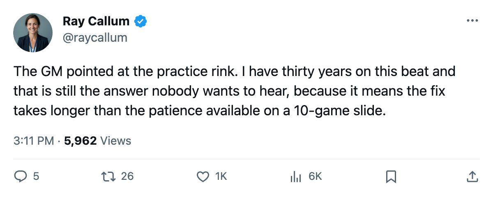
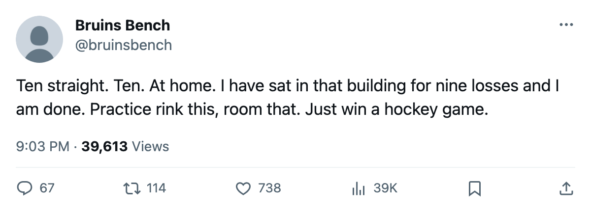

WSH
WSH EDM
EDMNotes from the West: Chicago's GM Pointed at the Practice Room After the 10th Straight Loss
Jason Hughes told The Tunnel the roster is short and the room where the lines come together needs work.
 Ray CallumSenior correspondent · Home Ice Network
Ray CallumSenior correspondent · Home Ice Network
Chicago dropped a 1-3 home decision to Washington on Tuesday night. The losing streak reached 10 games, and the home record moved to 1-9.
The Blackhawks sit 15th in the West with 10 points through 16 games. Their goal differential of minus 18 is the worst mark in the league.
"We're just, we're short right now," Hughes told The Tunnel's Jan Kowalczyk this week.
Depth is a fair complaint.  Chicago Blackhawks have lost 55 days to injury this season across 8 spells, including Deron Quint77 (groin, out until November 24). The GM said he won't trade while the roster is that short. "I'm not trading bodies off a roster that's already thinned out," he said.
Chicago Blackhawks have lost 55 days to injury this season across 8 spells, including Deron Quint77 (groin, out until November 24). The GM said he won't trade while the roster is that short. "I'm not trading bodies off a roster that's already thinned out," he said.
Fifty-five days is 14th in the league. That list is real, but it's not what's producing two wins.
What the GM said about the building
Hughes went past the usual script. He pointed at the practice rink.
"Those guys are skating on their own ice and we're losing. That's the practice rink. That's the room you prep in, the room where the lines come together. If they're not sharp when they step on it, something's wrong with the room they came from."
He offered no date for an upgrade, and when pressed on a single fix, he kept it in-house: "It stays in the club."
Washington's day, Chicago's problem
Washington outshot Chicago Blackhawks 25-17 and improved to 15 points through 17 games, sitting 11th in the East. For the Capitals, a road win in a building where the home crowd has grown restless. For Chicago, the tenth straight.
Chicago's next game is Monday in Edmonton. The Oilers have won 3 straight and carry 11 injury days on the season. Their only man on the shelf is a defenseman with a rib.
The 10-game losers go to the 3-game winners, and the only game these two clubs have met this season ended 4-1 for Edmonton.

